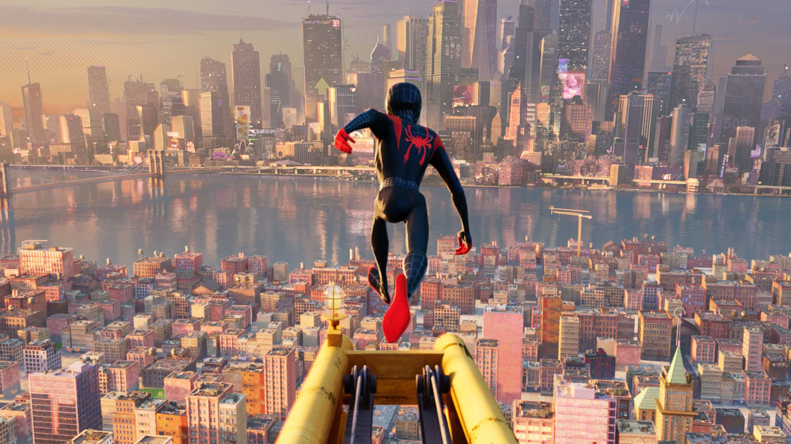

Spider-Man: The Amazing Origin
By Marvel Comics HistorianIntroduced in Amazing Fantasy #15 in 1962, Spider-Man, the alter ego of Peter Parker, revolutionized the comic book industry. He was the first teenage hero who was not a sidekick but a protagonist in his own right.

Miles Morales: The New Spider-Man
Miles Morales is a teenager of African-American and Afro-Puerto Rican descent who took up the mantle of Spider-Man in the Ultimate Marvel Universe. After being bitten by a genetically engineered spider, he gained powers similar to Peter Parker's, along with unique abilities like bio-electric "venom blasts" and temporary invisibility.

Unlike other iterations, Miles balances his life as a student at Brooklyn Visions Academy with his responsibilities as a hero. His philosophy, inspired by Peter Parker, teaches that "with great power there must also come great responsibility". Whether he's navigating the multiverse or protecting Brooklyn, Miles has become a symbol of what it means to "do his own thing" while upholding the legacy of the Spider-Man name.